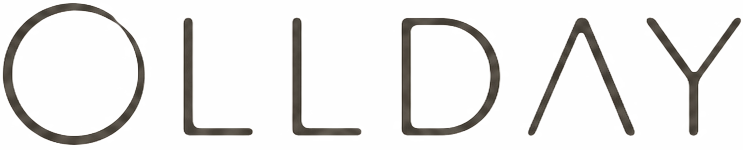
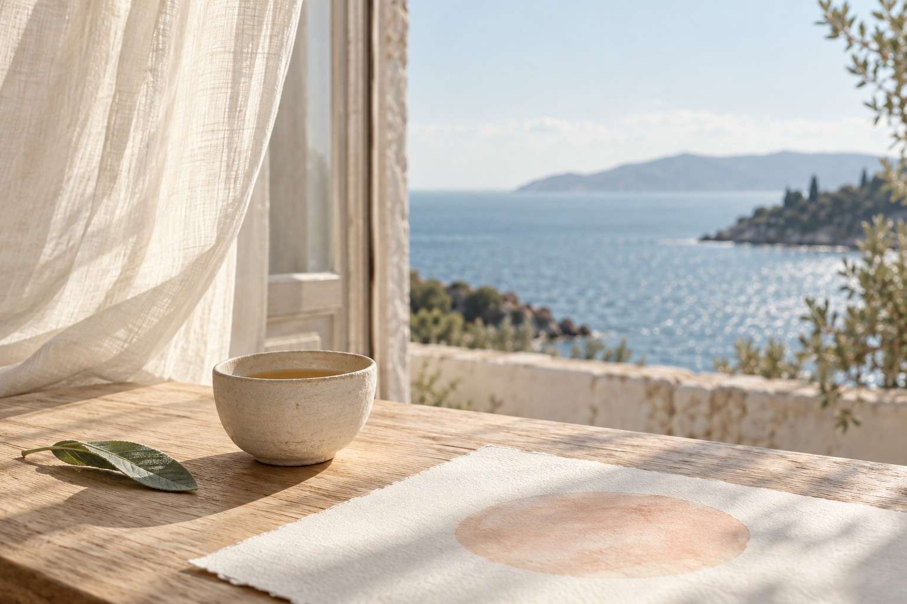

MIST BLUE / QUIET
잠시, 아무것도
채우지 않는 시간.
당신을 위한 5분 · 01
말 없는 차 한 잔
간직한 쉼은 현재 브라우저에 저장돼요.

A ROUNDER KIND OF DAY
조금 지친 날도, 아무 이유 없는 날도.
지금의 나에게 어울리는 작은 쉼을 만나보세요.

FROM A TO O
ALLDAY의 날카로운 A를 둥근 O로.
OLLDAY는 완벽해야 한다는 마음을 잠시 내려놓는 데서 시작합니다.
빨리 답을 찾기보다 천천히 바라보는 시간.
잘해내는 일보다 그저 해보는 즐거움.
당신의 하루에 작은 여백을 건넵니다.
01 / OBSERVE지금의 마음을 알아차리고
02 / ALLOW있는 그대로를 허용하고
03 / CONTINUE나의 속도로 이어가요
HOW ARE YOU, REALLY?
길게 설명하지 않아도 괜찮아요.
가장 가까운 마음 하나를 골라주세요.
잠시, 아무것도
채우지 않는 시간.
간직한 쉼은 현재 브라우저에 저장돼요.
완성하지 않아도 좋은 세 가지 연습.
제품 이미지와 구성은 기획 단계의 콘셉트입니다.
콘텐츠를 불러오고 있어요.
콘텐츠를 불러오고 있어요.
YOUR PACE IS A GOOD PACE.
오늘의 작은 쉼이 내일의 다정한 기억이 되도록.
지금 나에게 쉼을 건네기 ↗